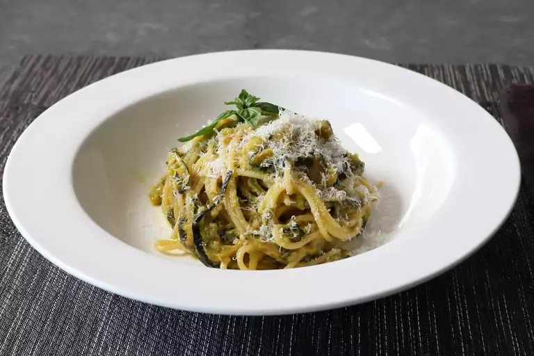

Zucchini Spaghetti

Description
"A Life Changing Pasta." The results were amazing and the key to getting the toasted sweet taste of the zucchini was deep-frying it!
Ingredients
- Sunflower oil (Deep Frying), Olive Oil
- Spaghetti
- Basil
- Zucchini
- Grated Parmigiano-Reggiano
- Unsalted butter
Steps
- Place sunflower oil in a deep fryer at 350 F (175 C)
- Fry zucchini slices until lightly browned. Place on a paper towel.
- Refrigerate overnight.
- Boil pasta in salted water till al dante.
- Heat olive oil in a skillet, add zucchini and butter.
- Tear the basil leaves and add it to the pan. Add the pasta and toss it in the sauce.
- Serve with grated cheese and fresh basil.